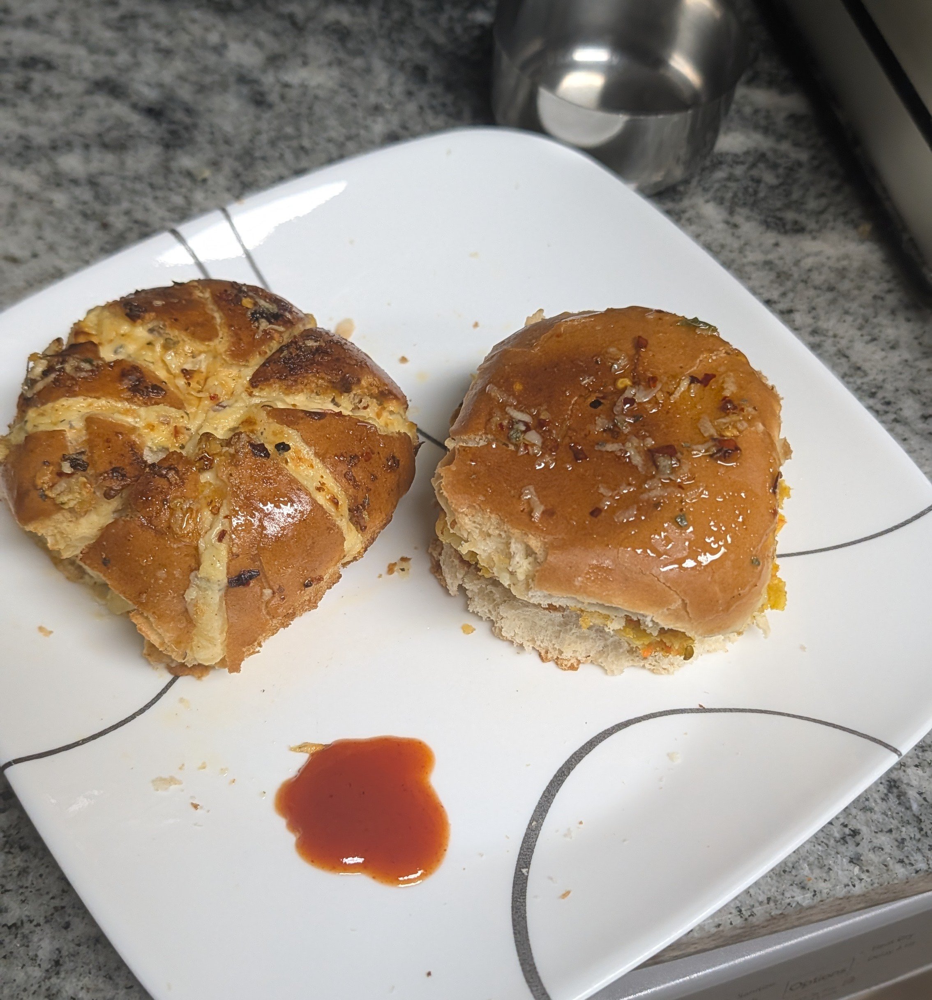

Despair and Desolation
I want to preface this by emphasizing how deeply cooked I am. Quite literally fried. Doomed. Close to my end.
Hello there! Nice of you to come read my mini rant. My AP Envi Science Exam is in about a week, and I haven't studied. Why, you may ask? I got lazy. Sigh. I've been catching up on sleep, mostly. I decided to code this so that I had a chance at going to HCTG while also deluding myself into thinking I'm "technically" studying for my exam by doing this.
YEAH. NO. THE BLEEP I'M NOT.
My only saving grace right now is that I'm actually somewhat good at the subject, and the main things I'd have to review are some of the topics that just need heavy memorization.
Even then though... It's NOT looking good.
inhales
AAAAAAAAAAAAAAAAAAAAAAAAAAAAAAAAAAAAAAAAAAAAAAAAAAAAAAAAAAAARRRRRRRRRRRRRRRRRRRRRRRRRGGGGGGGGHHHHHHHHHHHHHHHHHHHHHHHHHHHHEWYGABUHIUHJFHUYIJNEWFUHGBEIJNOFUYH8EIJNOKWQFIUHIJNEOKFJWUIHFJUHY8IJNUHJEJWNK
I can scream with agony how many times I want. CollegeBoard STILL won't leave me alone. Ugh.
I still need to study, but I'm still going to code this because I like events...
I will try to now code 20 hours into one website while also (somewhat??) studying. Follow along as this warrior slowly descends into insanity!
Let the hacking commence. <//3
Day 1: Status Update
Okay. What the hell. I'M NEVER USING AI TO CODE AGAIN. THAT TOOK HOURS? WHY DO PEOPLE DO THAT. WILLINGLY. OH MY GOD. IT SPOUTS SO MUCH BS BUT IT DOESN'T ACTUALLY CODE ANYTHING RIGHT. OH MY GOD. I BASICALLY HAD TO FIX EVERYTHING MYSELF. But since I used the AI formatting it just looks like I vibe-coded everything... SIGH.
No but seriously. Why do people even use AI to code. I think I used up more water than it would've taken to fix the water shortages in NJ... It just kept giving me the same wrong answers when I asked it questions <//3 AND THEN. WHEN ITS ANSWERS WERE WRONG. IT KEPT GOING BACK TO ONES IT ORIGINALLY SAID WAS "MESSING UP MY CODE". I see now why everyone hates debugging at least...
Day 2: Sanity Update
Morning: MY EYES HURT SO BADLY. But I persist. I brought my good laptop to school to grind! Only problem is that it runs out of charge VERY fast if it's not connected to its charger...
IT'S OKAY. BUT IT REFUSED IYKYK... /REF
Noon: I just want sleep.
Night: Yeah so I. fell asleep immediately after I got home from school. And... it's about 10 PM...
Not really the time I wanted to start at today but it's fine I guess. I just have to work all of tomorrow and I'll be good... I'm currently at right about 10 hours, so I have made really good progress in my opinion!
Late night: Not as tired as I thought I'd be! And I'm making good progress :) I might actually finish! The code I tried to AI generate still gave me even more issues, so I had to go in and fix that even more for a little bit... But I made it through! I think it's fully functional now :D
Day 3: Survivability Update
Afternoon: Won't do as many updates today, I basically just need to code in a few more things + add information and I'm done!
Night: I thought I'd be able to finish today but I can't... My fault for taking a break I guess :(
IN MY DEFENSE. I REALLY WANTED FOOD. AND I MADE MYSELF A GARLIC CREAM CHEESE BUN + A GARLIC CHEESE BURGER.

I'M GONNA HAFTA ADD A DAY 4 NOW. AUGHHHHHHHH. WHY DO I DO THIS TO MYSELF >:(
Day 4: Sans Update
"It's a beautiful day outside. Birds are singing, flowers are blooming... on days like these", I'M STILL BLEEPING BURNING IN HELL.
IT'S BEEN DAYS... EONS STARING AT MY SCREEN... WHEN WILL IT END :(
Honestly, I'm being pretty dramatic right now. I'm basically at 20 hours and I fixed all of my features and formatting. Now I just have to format and paste in notes and then I can submit!
I did accidentally stay up till 5 am yesterday, but no harm done!
Ah... me and my little soliloquies... how I love being dramatic...
FINISHED. BUT. NOT ON TIME. sigh.
sources are: https://drive.google.com/drive/folders/1cpsoUd6Q6OED-kZ9KifS8pJ8FQ-miy4S and https://docs.google.com/document/d/1BTF7fnMcwinr1WVA2PjeZXR757Ei4NFAfqEghYP8Nck/edit?tab=t.0